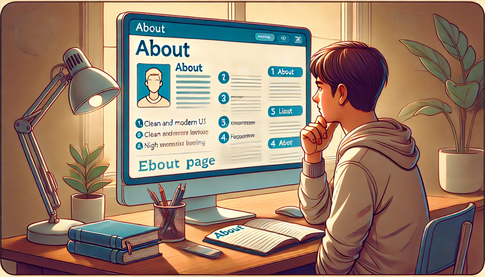
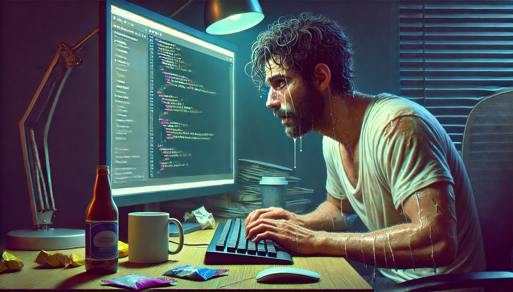
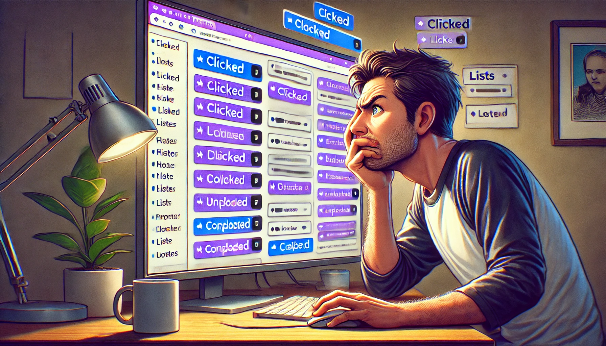

Web Developer Life
Hello, these photos reflect me trying to learn HTML



These images where created by CHATGPT
Promts are as below:
- A digital illustration of a computer screen displaying a web page. The webpage has a visible 'About' page link, and an ordered list below it with items numbered 1, 2, 3, and 4. Each list item is clearly formatted and neatly aligned. In front of the screen sits a young man focused on learning, leaning forward slightly with a thoughtful expression, notebook and pen in hand, possibly taking notes. The environment includes a simple desk setup, warm lighting, and a studious atmosphere.
-
A digital painting of a web developer working late at night. He is sweating and visibly tired, with dark circles under his eyes and slouched posture, yet he continues typing intensely on his keyboard. His computer screen displays code and a partially built web page. Empty coffee cups and snack wrappers surround him. The room is dimly lit, with a soft blue glow from the monitor.
-
A digital illustration of a computer screen displaying a web page, with both clicked (purple) and unclicked (blue) hyperlinks. Each link reveals or hides lists underneath them, some expanded and others collapsed. A frustrated man sits in front of the screen, furrowing his brows and struggling to click on a specific link with his mouse. His hand is slightly raised in irritation. The room background includes a desk, coffee mug, and ambient lighting from the monitor.